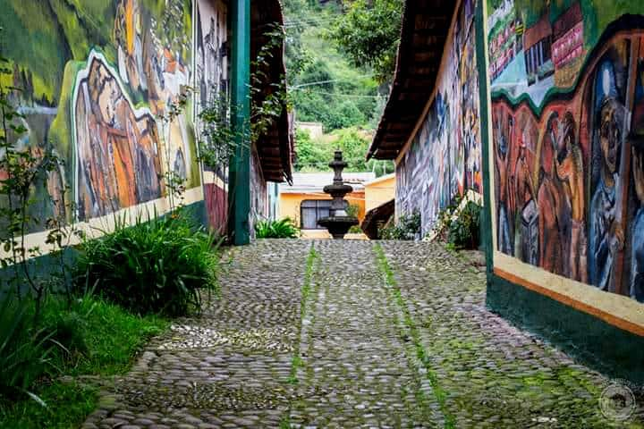
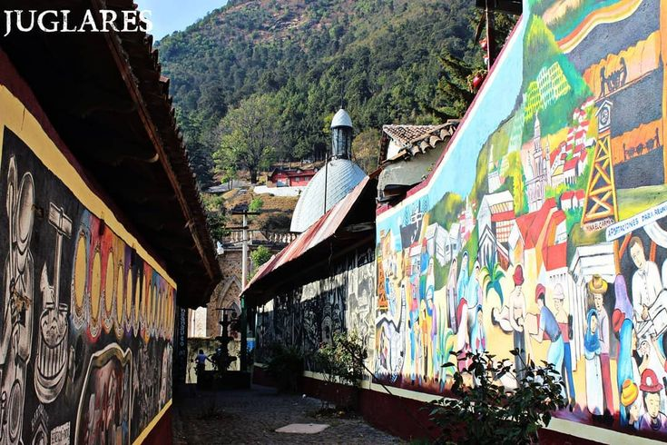
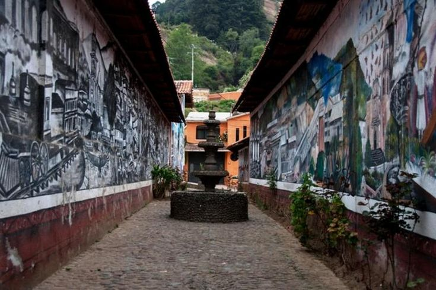
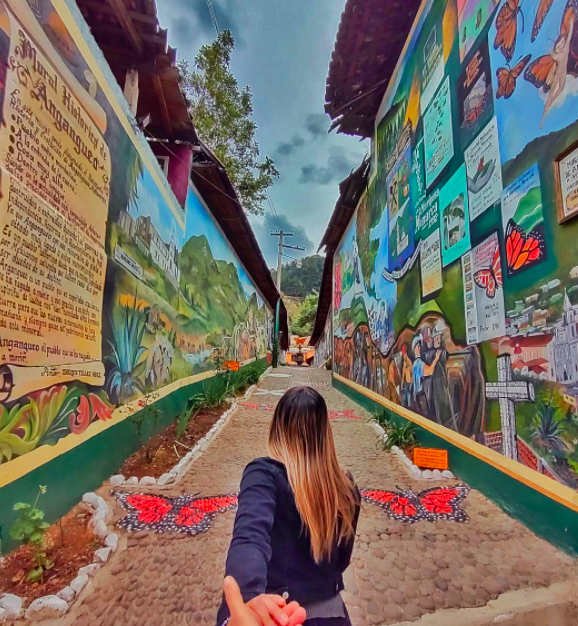
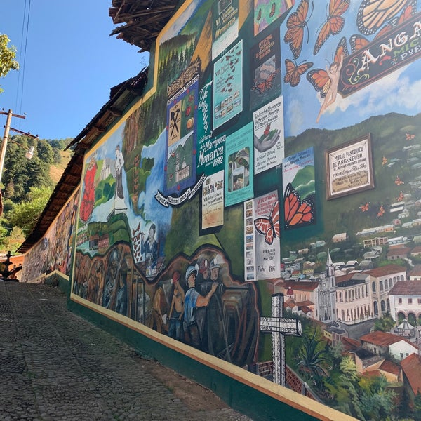

El Mural de Jorge Téllez se divide en seis partes y narra la historia de Angangueo. Se ubica en un callejón a un costado del Templo de la Inmaculada Concepción, no puedes dejar de conocerlo y perderte en sus detalles.




